沖繩全島雙軌導航系統：單軌鐵路 × 自動車道高速路網
沖繩都市單軌鐵路（ゆいレール）
官方主題代表色為赤紅與白，貫穿那霸空港與那霸市區核心。全線 19 個站點均配有官方數字代碼。全線支援 Suica、ICOCA、PASMO、OKICA 感應乘車，以及 VISA / JCB / Mastercard 信用卡感應進出站。
沖繩高速自動車道 & 國道 58 號
縱貫全島的高速命脈，全程支援 ETC 快速通關。搭配沿著西海岸延伸的[ 58 ] 國道58號，是連結度假村與北中美景的核心幹道。
🪧 實體現場看板速認法（抬頭一秒校對）
6 天 5 夜 奢享行程分區總覽
| 天數 | 核心地理區塊 | 主力交通軸線 | 經典名勝與慢活體驗 | 國寶特色美食（首選名店） | 下榻奢華飯店 |
|---|---|---|---|---|---|
| Day 1 | 那霸空港 ➔ 恩納村海岸 | 沖縄自動車道 [E58] | 機場抵達、專車/取車、度假村私人沙灘、Sunset 池畔漫步 | 百年古家 大家（純種阿古豬涮涮鍋） | Halekulani Okinawa |
| Day 2 | 北部本部半島 ➔ 古宇利島 | [ 58 ] ➔ 縣道 84 | 美麗海水族館（鯨鯊黑潮之海）、備瀨福木林道單車、古宇利大橋 | 岸本食堂本店（百年木灰沖繩麵） | Halekulani Okinawa |
| Day 3 | 中北部西海岸 ➔ 讀谷浦添 | [ 58 ] 西海岸幹線 | 萬座毛象鼻岩景觀步道、座喜味城跡古石拱門、港川外人住宅文創 | 琉球之牛 恩納本館（頂級黑毛和牛） | Halekulani Okinawa |
| Day 4 | 中南部自然移師 ➔ 那霸市區 | [ 331 ] ➔ [9]牧志 | 沖繩世界文化王國玉泉洞、壺屋陶藝老街選物、飯店高空酒廊 | 琉球茶房 あしびうなぁ（枯山水御膳） | Hyatt Regency Naha |
| Day 5 | 那霸首里王朝 ➔ 懸崖神社海景 | [14]首里 ➔ [7]縣廳前 | 首里城正殿復興外觀、金城町石疊道、波上宮崖上海邊鳥居、國際通 | Steak 碧 Heki（女性主廚石垣牛鐵板燒） | Hyatt Regency Naha |
| Day 6 | 瀨長島 ➔ 那霸空港賦歸 | [ 331 ] ➔ [1]空港 | 瀨長島 Umikaji 階梯海景露台觀機、空港免稅特產採買、優雅賦歸 | 幸福鬆餅 瀨長島店（海景舒芙蕾） | 溫暖的家 |
極致下榻飯店雙核心

ハレクラニ沖縄（沖繩海麗客蘭尼）
地址：沖縄県国頭郡恩納村名護1967-1
源自夏威夷百年名門「天國之館」，坐落於沖繩恩納村海岸國定公園內。全客房均坐擁壯麗綠寶石海景，擁有標誌性的 150 萬枚馬賽克磁磚蘭花泳池。在微風吹拂中享受私人海灘與米其林星廚操刀的極致晚宴。
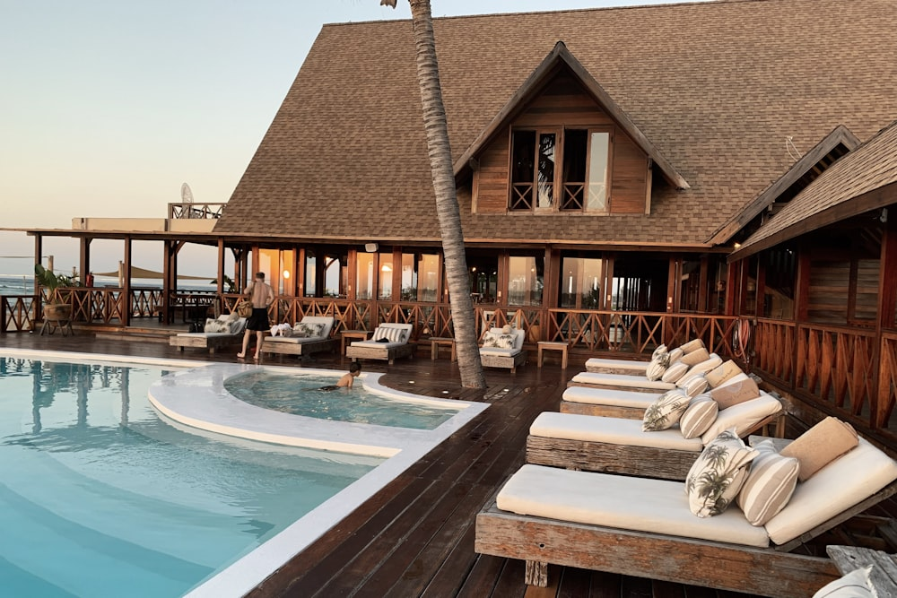
ハイアット リージェンシー 那覇 沖縄
地址：沖縄県那覇市牧志3-6-20
鬧中取靜的市區奢華地標。步行 1 分鐘即可抵達 300 年歷史的壺屋陶藝老街，步行 3 分鐘抵達繁華國際通。飯店融合琉球傳統工藝與現代極簡設計，18 樓的高空露台酒吧更是俯瞰那霸市區璀璨夜景的私房去處。
每日極致自由行詳細規劃
抵達琉球・駛向碧海・恩納海岸奢華安頓
路線軸向：那霸空港 ➔ 沖繩自動車道 ➔ 恩納村名護海岸
那霸空港抵達 ➔ 租車專車接駁北上
班機降落於那霸國際機場，出關後由租車公司專屬接駁車（或預訂專車）直達營業所取車。辦理手續後啟動導航，由那霸 IC 直上沖繩自動車道北上，避開市區紅綠燈，約 60 分鐘直抵恩納村。
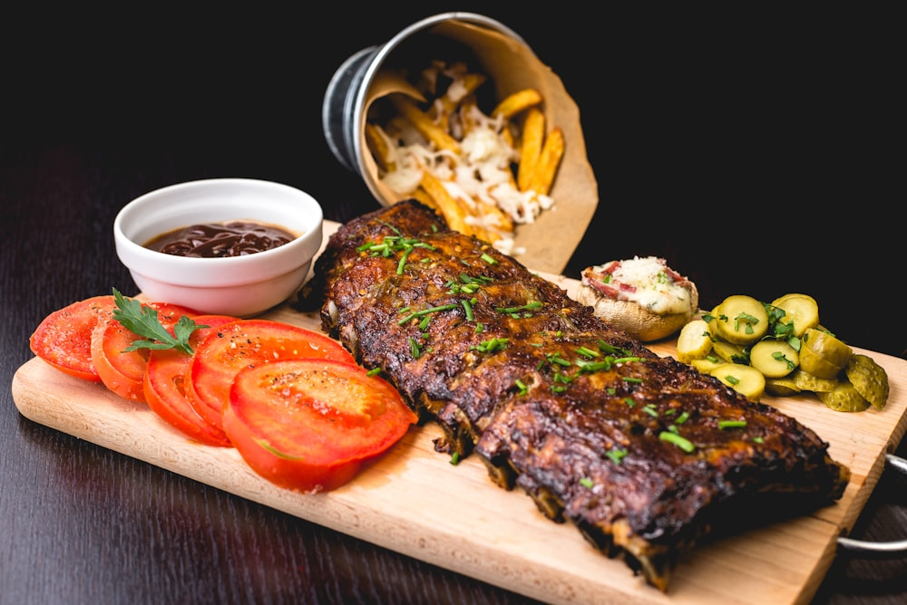
百年古家 大家（Ufuya）極上阿古豬涮涮鍋
建於明治 34 年（1901年）的安里家百年木造古民家，坐落於山巒綠意之中。戶外有天然流水瀑布，旅客在古樸的榻榻米迴廊上，品嚐油脂甜美、毫無腥味的純正「特選極上アグー豚（阿古豬）」涮涮鍋與特製黑糖泡芙。
山海秘境・國寶黑潮鯨鯊・神之島跨海之境
路線軸向：美麗海水族館 ➔ 備瀨福木林道 ➔ 岸本食堂 ➔ 古宇利島跨海大橋
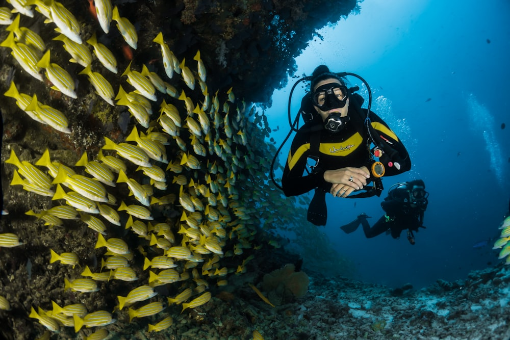
沖繩美麗海水族館（Okinawa Churaumi Aquarium）
沖繩最具代表性的國寶級景點。平日晨間 09:00 前抵達，可完美避開 10:30 以後湧入的大批團體遊覽車。在長達 35 公尺、高 8.2 公尺的世界級巨型壓克力面板「黑潮之海」前，靜靜欣賞巨大鯨鯊與鬼蝠魟優雅巡游。
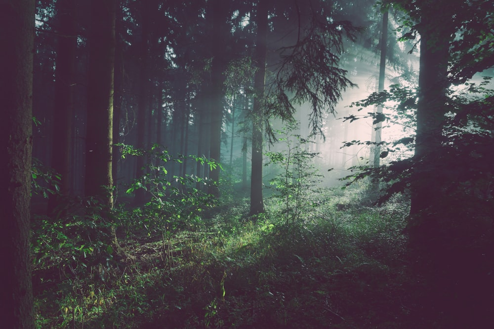
備瀨福木林道散策 ➔ 岸本食堂百年木灰沖繩麵
緊鄰水族館的古老聚落，上千株樹齡超過 300 年的福木築成天然防風綠色隧道。陽光穿透樹葉灑在白色珊瑚沙小徑上，步行或租借單車漫步至盡頭的「備瀨一線天」，感受未受打擾的原生沖繩寧靜時光。
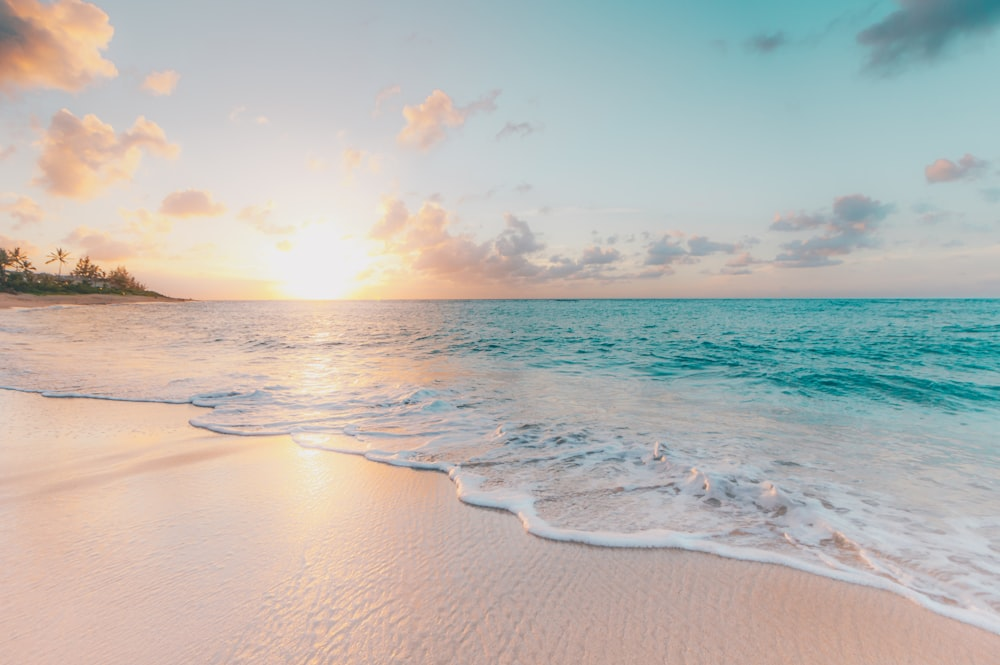
古宇利跨海大橋 ➔ 古宇利海洋塔海景放鬆
全長 1,960 公尺的古宇利跨海大橋橫跨碧綠與鈷藍交織的清澈海域，被譽為「彷彿在海面上飛行」的夢幻自駕路線。搭乘無人自動高爾夫球車登上「古宇利海洋塔 (Kouri Ocean Tower)」，俯瞰 360 度海天一色，享受島上海風下午茶。
西海岸工藝散步・斷崖海天・海景慢活留白
路線軸向：萬座毛 ➔ 港川外人住宅街 ➔ 琉球之牛恩納本館

萬座毛（Manzamo）象鼻岩景觀散步道
琉球國王尚敬曾讚嘆「萬人座之原野」。高 20 公尺隆起的珊瑚礁斷崖雕琢出如同大象長鼻的奇岩奇觀。新落成的「萬座毛周邊活性化施設」提供平緩木棧道，漫步環形觀景步道，遠眺對岸恩納村全景。
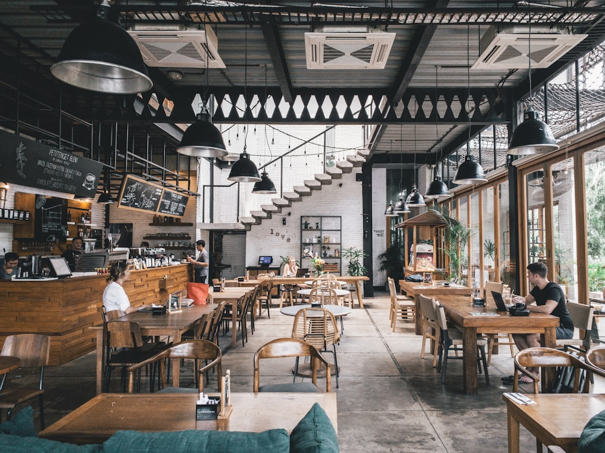
港川外人住宅街（Minatogawa Stateside Town）慢活時光
美軍舊眷屬平房聚落改造的文青街區。街道以美國各州名命名（如 Nevada、Florida、Texas）。純白美式平房外牆飾以繽紛彩色窗框，匯集人氣手作水果塔名店「[oHacorté]」、天然酵母麵包與手沖精品咖啡。
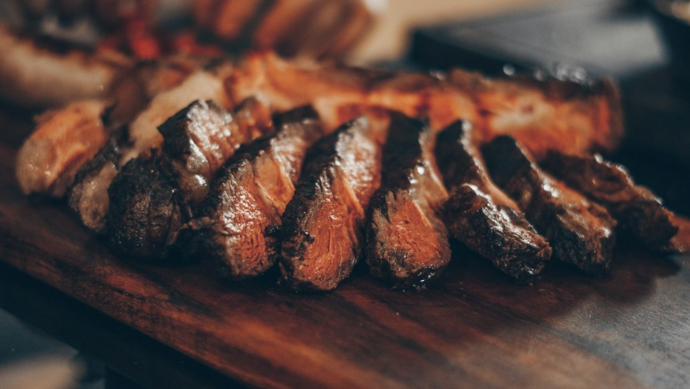
琉球之牛 恩納本館（Ryukyu no Ushi）極品黑毛和牛炭火燒肉
沖繩最具盛名的頂級和牛專門店。主廚嚴選無雜味、油花如霜降般細膩的頂級沖繩產黑毛和牛。搭配特製冷藏厚切牛舌與極致上等牛五花，炭火輕炙幾秒即入口即化，肉汁極度豐盈。
南島風土移師・地心鐘乳石奇觀・壺屋陶藝換宿
路線軸向：恩納村退房 ➔ 玉泉洞文化王國 ➔ 那霸凱悅入住 ➔ 壺屋陶藝老街 ➔ 琉球茶房
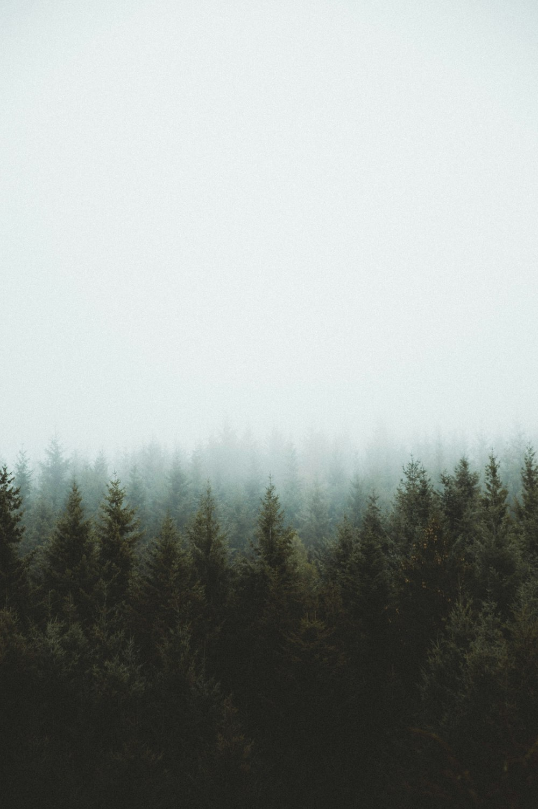
沖繩世界文化王國・玉泉洞（Gyokusendo Cave）
悠閒退房後南下。玉泉洞歷經 30 萬年歲月洗禮，擁有超過 100 萬根天然石筍與鐘乳石，全長達 5 公里（開放 890 公尺步道）。洞內終年維持約 21°C 沁涼恆溫，沿著地下伏流水步道漫步，宛如進入神秘的地心藍泉世界。
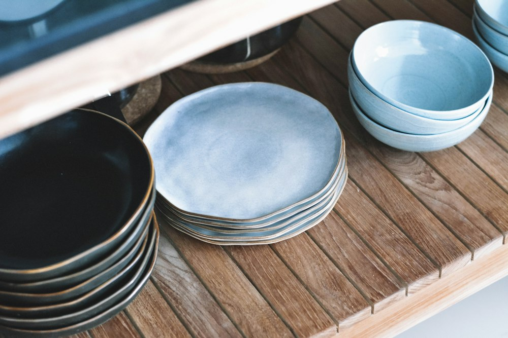
那霸凱悅 Check-in ➔ 壺屋やちむん通り（壺屋陶藝老街）
抵達「Hyatt Regency Naha」辦理入住寄存行李後，步行 1 分鐘即達擁有 300 年歷史的琉球陶藝發源地。琉球石灰岩鋪成的石板古道兩旁，林立著數十間獨立陶藝工坊、風獅爺手作店與風格選物咖啡館。
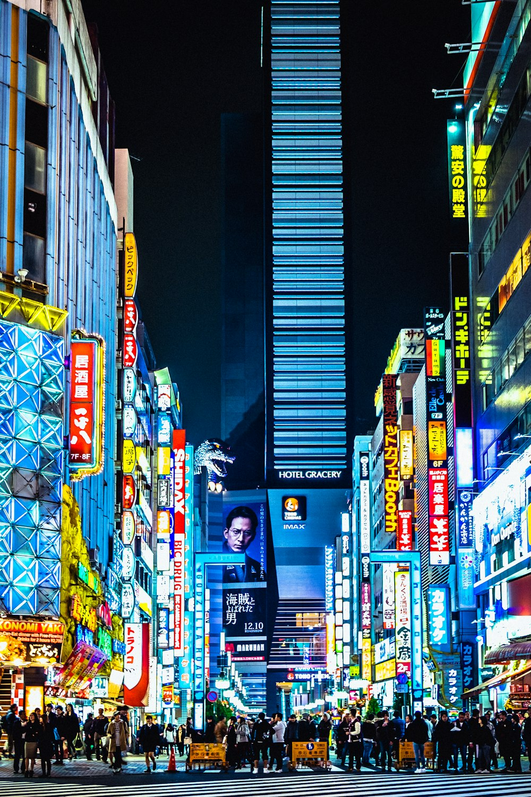
琉球茶房 あしびうなぁ（Ashibiuna）枯山水庭園琉球御膳
座落於首里城下町的美里家古宅舊址。木造古民家前設有典雅精緻的枯山水白砂庭園。旅客盤腿坐在緣側迴廊，伴隨三線琴樂音與晚風，細細品味傳承自琉球王國宮廷食儀的御膳料理。
琉球王城重生・海崖御嶽與那霸繁華奢宴
路線軸向：首里城公園 ➔ 首里麵 ➔ 波上宮 ➔ 國際通松尾 ➔ 碧 Heki 鐵板燒
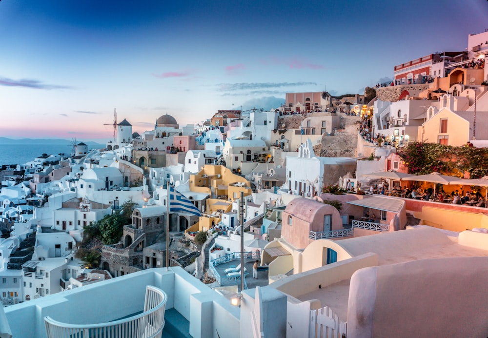
首里城公園（Shurijo Castle）正殿外觀復原現場巡禮
琉球王國的政治、外交與文化中心（世界文化遺產）。2026 年秋季正殿外觀工程已盛大完成重現，朱紅色的宮殿樑柱再度矗立於藍天下。晨間散步穿過守禮門、歡會門、登高至西之展望台俯瞰那霸市與東海全景。
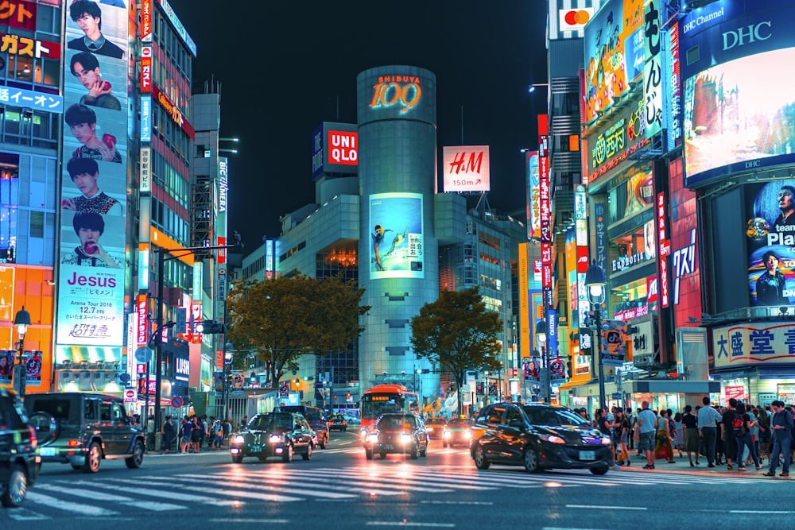
波上宮（Naminoue Shrine）崖上海景鳥居參拜
琉球八社之首，被譽為「當國第一之神社」。整座朱紅神殿聳立於突出於蔚藍海面的珊瑚礁懸崖之巔。參拜祈求旅途平安後，漫步至下方的「波之上海灘」或登上波之上臨海大橋，回望懸崖上的神社倒影。
Steak 碧（Heki）國際通松尾店 全女性主廚極品石垣牛鐵板燒
沖繩傳奇的高級鐵板燒品牌，特色為「全女性專業調理師操刀」。細膩而精湛的火候掌控，將極稀少珍貴的「最高級黑毛和牛・石垣牛沙朗/菲力」在厚重鐵板上煎炙得表層微脆、內芯肉汁激盪，搭配現煎沖繩紅芋與島蒜。
海風小希臘・機場絕景與完美賦歸
路線軸向：瀨長島 Umikaji Terrace ➔ 幸福鬆餅 ➔ 那霸空港國際線出境

瀨長島 Umikaji Terrace ➔ 幸福鬆餅（A Happy Pancake）
距離那霸機場僅 15 分鐘車程的夢幻離島。純白色階梯式建築群順著山丘斜坡面海而建，被譽為「沖繩小希臘」。坐在露天觀景台品嚐現點現做、蓬鬆如雲朵般的「幸せのパンケーキ（幸福鬆餅）」，一邊欣賞大型客機貼海降落的震撼美景。
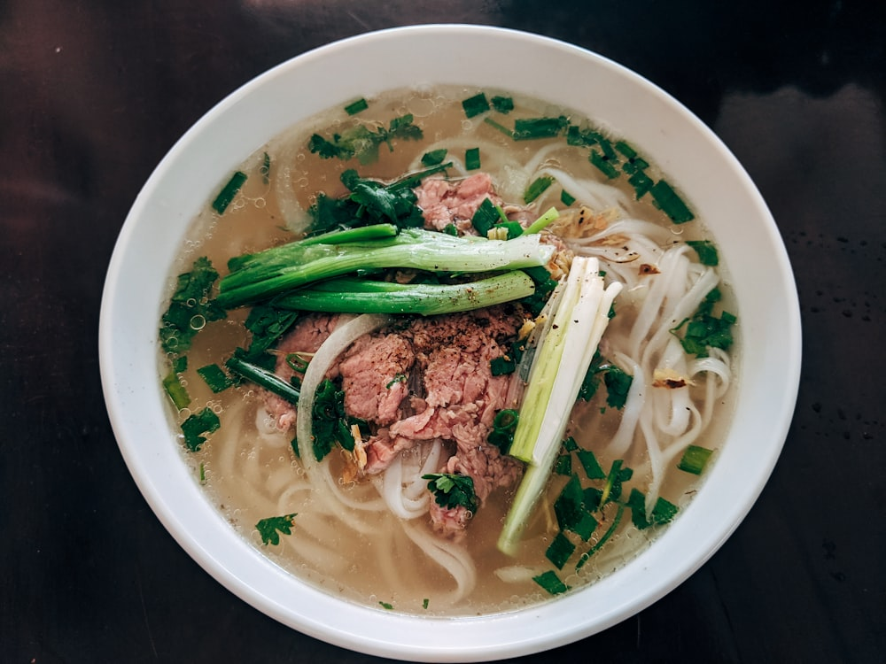
還車 ➔ 那霸空港國際線航廈免稅採買與優雅登機
車輛開至機場周邊營業所完成還車檢查（或專車送達），搭乘接駁車直達國際線 3 樓出發大廳。辦妥登機報到與行李托運後，於管制區內外免稅店採買沖繩限定名產（ROYCE 石垣島黑糖生巧克力、雪鹽金楚糕、首里古酒泡盛），帶著滿滿海島陽光與鬆弛回憶踏上歸途。
重點名勝與頂級名店預約直通清單
| 類別 | 設施 / 餐廳名稱 | 建議預約時機 | 特殊規範與注意事項 | 官方預約直達連結 |
|---|---|---|---|---|
| 國寶名勝 | 美麗海水族館 (Churaumi) | 出發前 7~14 天線上購票 | 線上預售 QR Code 可直接掃碼入閘免排隊買票。 | 官方繁體中文網站 ↗ |
| 頂級燒肉 | 琉球之牛 (Ryukyu no Ushi) | 建議提早 30~45 天搶位 | 僅接受官網 TableCheck 系統預約，現場候位常需等 90 分鐘以上。 | 官網預約直達 ↗ |
| 百年阿古豬 | 百年古家 大家 (Ufuya) | 晚餐建議提早 14~30 天 | 晚餐阿古豬涮涮鍋為全預約制；午餐為現場依序候位。 | 官網預約直達 ↗ |
| 和牛鐵板燒 | Steak 碧 Heki (國際通松尾店) | 建議提早 14~21 天 | 全女性主廚鐵板吧台席位有限，建議指定晚間第一輪 (18:00~18:30)。 | 官網預約直達 ↗ |
| 海景甜點 | 幸せのパンケーキ (幸福鬆餅 瀨長島店) | 預計到訪日前 14 天凌晨開放 | 官網每日開放預約席位，搶約戶外海景露台首選；無預約需現場抽整理券。 | 官網預約直達 ↗ |
| 文化體驗 | 玉泉洞・沖繩世界文化王國 | 出發前 3~5 天或線上買套票 | 洞穴內部濕度高、地面濕滑，建議著防滑平底鞋參觀。 | 官方繁中網站 ↗ |
行前實用旅行百科與在地法令指南
📲 電子入境卡 (Visit Japan Web) 與交通支付
- Visit Japan Web：出發前 48 小時內登入官方系統（vjw-lp.digital.go.jp）填寫入境審查與海關申報，截圖 QR Code 入境即可快速掃描通關。
- 單軌電車 Yui Rail：全線支援實體 Suica、ICOCA、PASMO、OKICA 卡，亦可直接使用 Apple Pay 綁定之 VISA / JCB / Mastercard 信用卡感應進出閘門。
- 自駕高速 ETC：租車時強烈建議向租車公司加購租借「ETC 卡」，行經收費站自動扣款，無需停車準備零錢。
💴 現金儲備評估與 10 月氣候穿著
- 非現金覆蓋率：連鎖便利商店、商場、大型景點 95% 支援感應支付；但在岸本食堂、市場攤位及投幣拉麵機僅收日圓現金，建議每人準備約 20,000~30,000 日圓現金備用。
- 10 月氣候與穿著：平均氣溫約 24°C~28°C，海風舒適宜人，降雨機率大幅降低。白天著透氣夏裝、太陽眼鏡與遮陽帽，入夜海風微涼，建議隨身攜帶薄防風外套或棉麻開衫。
🛍️ 日本消費稅退稅 (Tax Free) 須知
- 退稅門檻：同一店家當日單筆消費未稅滿 5,000 日圓（含稅 5,500 日圓）以上即可辦理 10% 消費稅減免。
- 護照核驗：結帳時必須出示護照正本（或 Visit Japan Web 之免稅 QR Code）。消耗品（美妝、藥品、食品）會以特製封口袋包裝，在出境日本前嚴禁拆封。
- 那霸市購物聖地：DFS T Galleria（日本唯一的國內免稅精品城）、國際通堂吉訶德、PARCO CITY 百貨均設有專屬退稅服務櫃台。
⚠️ 嚴格法規紅線與在地文化禮儀
- 酒駕零容忍：日本對酒後駕車採連坐重罰，不僅駕駛人受罰，提供酒類者、同乘者均處以最高 3~5 年徒刑或高額罰金！
- 無號誌斑馬線行人絕對優先：車輛行經斑馬線若有行人欲穿越，必須完全停止禮讓，違者將面臨交通取締重罰。
- 禁止邊走邊吃：在老街與市場購買小吃，請於店家前指定食用區品嚐完畢並將垃圾丟入店家垃圾桶，嚴禁邊走邊吃。
- 海洋生態保護：沖繩部分海灘規定使用對珊瑚礁無害的「海洋友善防曬乳」；嚴禁踩踏或折損活體珊瑚。